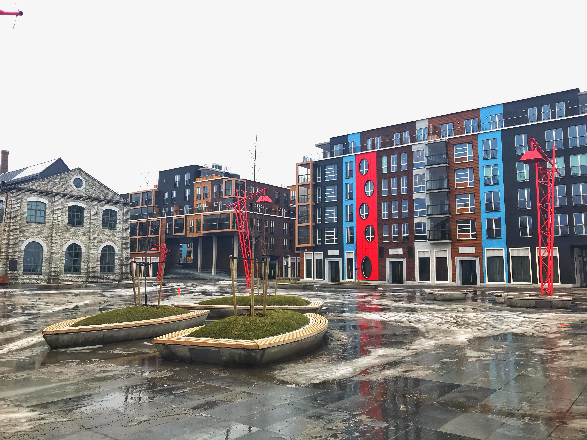
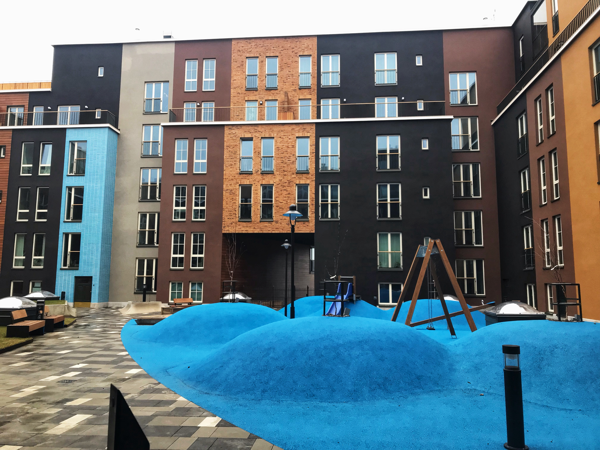
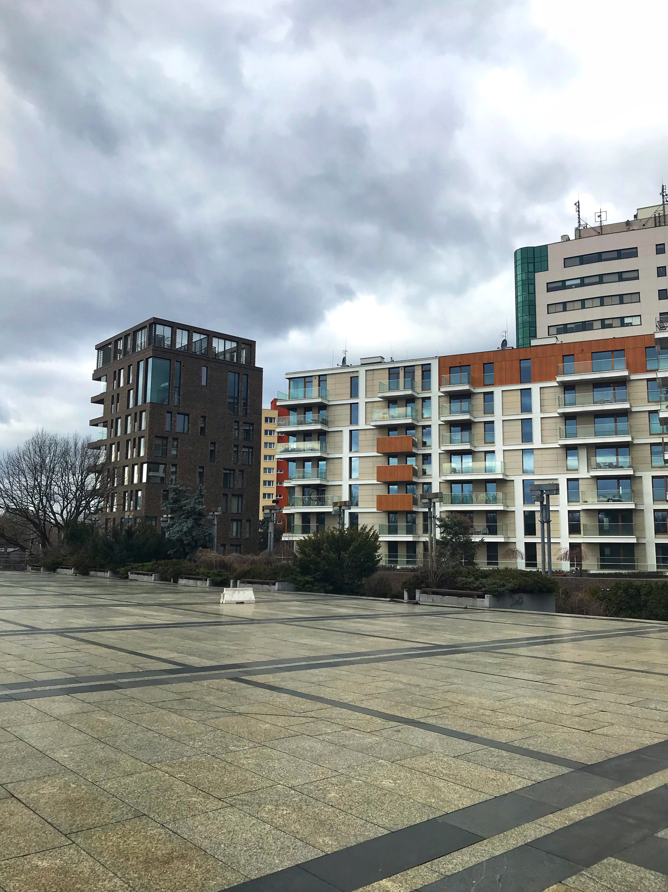

Это — типичные представители современной европейской малоэтажной застройки расположенные в районах Kalamaja в Таллине (фото 1-5) и Stara Praga в Варшаве (6-10).
Районы прилегающие к центру, с хорошо развитой инфраструктурой, подземными парковками, парками и всем остальным, что нужно для комфортной жизни. К сожалению, жилые дома со схожим архитектурным стилем в Беларуси можно встретить разве что в районе Новой Боровой, который расположен за МКАДом "в 15 минутах от метро Уручье". И в большинстве своем это будут дома с большой этажностью (10+), что по понятным причинам плохо сказывается на среду в этом районе.
Но кроме архитектуроного стиля, есть еще одна вещь, которая объеденяет эти новостройки — их цена. Средняя стоимость жилья во всех этих дома будет колебаться в пределах 80-100 тысяч евро за двухкомнатную квартиру в 4-5 этажном доме. И получается, что жилье и у нас, и в Европе стоит практически одинаково. На самом деле нет - если бы Новая Боровая располагалась в такой же близости к центру, как Kalamaja или Stara Praga, то жилье стоило бы даже дороже.
В таком случае может у нас хотя бы ипотеки лучше? 14% в стране для жизни против 2.7% в загнивающей Европе. Что это значит: возьмем квартиру стоимостью 200,000 рублей (93,000$). При годовой ставке 2.7% как в Эстоннии за 15 лет мы переплатим 20,375.25 $, а со ставкой 14% в стране для жизни переплата составит 131,038.69 $. Да, это больше стоимости жилья. В таком случае, жильё у нас будет стоить намного дороже, даже чем в той же Европе.
Думаю про размер зарплат в Европе говорить даже не нужно - все прекрасно понимают, что они там на порядок выше, даже с их налогами.
У кого-то еще остались мысли, что в Беларуси жить дешевле?